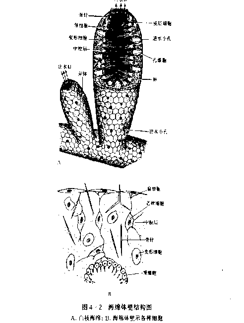
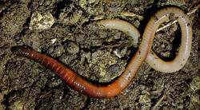
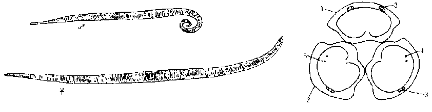

原生动物门 (Protozoa) — 单细胞动物的代表
一、原生动物概述：单细胞动物的"完整生物体"
原生动物门 (Protozoa) 是动物界中最古老、最原始的一门真核生物，由单细胞构成（少数为单细胞群体如盘藻、团藻）。其关键特征是：一个细胞即是一个完整的有机体，所有生理机能（运动、营养、呼吸、排泄、生殖）均由这个细胞的细胞器分别承担，故又被称为"细胞水平的生物"。
绝大多数原生动物体型微小，需借助显微镜观察，仅少数大型种（如大草履虫）肉眼可见，一般体长 10–300 μm。它们分布广泛，从淡水、海水、潮湿土壤到其他动物的体液、体内均可生存；少数营寄生生活（疟原虫、痢疾内变形虫、锥虫、利什曼原虫）。
主要特征（六项）：
- ① 单细胞生物：一个细胞即一完整生物体，无组织、器官、系统分化。
- ② 运动胞器：鞭毛（flagellum）、纤毛（cilium）、伪足（pseudopodium）三类，分别对应不同纲。
- ③ 营养方式多样：光合营养（自养，眼虫）、渗透营养（腐生）、吞噬营养（异养，变形虫）。
- ④ 呼吸与排泄：无专门器官，依靠体表进行气体交换；伸缩泡（contractile vacuole）调节渗透压并辅助排泄。
- ⑤ 生殖方式：无性生殖包括等二分裂、纵二分裂、横二分裂、裂体生殖、孢子生殖、出芽；有性生殖包括配子生殖、接合生殖。
- ⑥ 不良环境形成包囊 (cyst)：分泌胶质囊壁抗逆，渡过干旱、寒冷等不良条件，是其重要适应。
二、原生动物门四纲对比（核心考点）
原生动物门传统上分为四纲：鞭毛纲 (Flagellata)、肉足纲 (Sarcodina)、孢子纲 (Sporozoa)、纤毛纲 (Ciliata)。四纲在运动胞器、营养、生殖、生活史上各具特点，是联赛与初赛核心考点。
| 特征项 | 鞭毛纲 Flagellata | 肉足纲 Sarcodina | 孢子纲 Sporozoa | 纤毛纲 Ciliata |
|---|---|---|---|---|
| 代表动物 | 绿眼虫 Euglena、锥虫、披发虫、夜光虫 | 大变形虫 Amoeba、痢疾内变形虫 Entamoeba、有孔虫 | 间日疟原虫 Plasmodium | 大草履虫 Paramecium、四膜虫 Tetrahymena |
| 运动胞器 | 鞭毛 1–数根，"9+2"微管 | 伪足（叶状、指状、网状） | 无运动胞器，生活史中以鞭毛或伪足运动 | 纤毛极多，"9+2"微管；体表有表膜 |
| 营养方式 | 光合+渗透+吞噬（兼养） | 吞噬、胞饮作用 | 全营寄生，渗透吸收 | 口沟→胞口→胞咽→食物泡（异养） |
| 细胞核 | 单核 | 单核 | 单核（生活史复杂） | 大核（营养）+小核（生殖），异型核 |
| 生殖方式 | 纵二分裂（母子不分，最低等无性生殖） | 二分裂、孢子生殖 | 裂体生殖+配子生殖+孢子生殖 | 横二分裂；接合生殖（最低等有性生殖） |
| 伸缩泡 | 有（眼虫） | 淡水种有 | 退化 | 发达（前、后各 1 个） |
| 生活史 | 自由生活或共生 | 自由或寄生 | 需更换宿主，生活史复杂 | 自由生活 |
| 生态代表 | 赤潮（夜光虫）、披发虫-白蚁共生、锥虫-昏睡病 | 痢疾内变形虫-阿米巴痢疾、有孔虫-白垩纪化石 | 疟原虫-疟疾（按蚊传播） | 草履虫-污生；四膜虫-分子生物学模式生物 |
三、代表动物的形态与生理
3.1 鞭毛纲——绿眼虫 Euglena viridis
绿眼虫是兼具动物与植物特征的典型兼养生物。生活在有机质丰富的小型静水池中，体表有表膜（pellicle），具弹性，可伸缩变形，但不如变形虫变化大；表膜条纹是眼虫科特征。
重要结构（功能对应）：
- 鞭毛 (flagellum)：自胞口伸出 1 根（少数种 2-4 根），"9+2"微管结构（外周 9 对双联微管 + 中央 2 条中央微管），运动胞器，划水推进。
- 胞口、胞咽：胞口位于前端，下方为胞咽，胞咽末端膨大为储蓄泡。
- 储蓄泡 (reservoir)：储存多余水分。
- 伸缩泡 (contractile vacuole)：位于储蓄泡旁，主功能调节渗透压（排出多余水分），次要功能排泄。
- 眼点 (stigma)：红色，位于储蓄泡旁，现认为是"遮光物"，协助趋光。
- 光感受器 (photoreceptor)：位于眼点附近，感受光线。
- 叶绿体 (chloroplast)：体内多个，使眼虫呈绿色，能进行光合自养。
- 副淀粉粒 (paramylon)：类淀粉粒，储存多余养料，与碘不呈蓝紫色，眼虫类所特有。
- 基体 (basal body)/生毛体：鞭毛根部，对虫体分裂起中心粒作用。
趋光机制：眼点为遮光物，光线只能从特定方向到达光感受器，调节虫体使光射到光感受器上，表现为趋光。
生殖：纵二分裂（母子不分，为原生动物最低等的无性繁殖方式之一）。

3.2 肉足纲——大变形虫 & 痢疾内变形虫
大变形虫 Amoeba proteus：体长约 200–600 μm，是原生动物中体型最大、最典型的肉足纲代表。生活在清水池塘或水流缓慢、藻类较多的浅水中。
- 运动胞器：伪足 (pseudopodium) — 细胞质流动，临时伸出叶状、指状或网状突起，使虫体向伪足伸出方向移动（变形运动）。
- 摄食：吞噬作用 (phagocytosis) + 胞饮作用 (pinocytosis)。食物泡 (food vacuole) 与溶酶体融合进行胞内消化。
- 呼吸：依靠体表扩散。
- 伸缩泡：调节渗透压。
- 生殖：二分裂繁殖。
痢疾内变形虫 Entamoeba histolytica：寄生性肉足虫，引起阿米巴痢疾，世界五大寄生虫之一。其生活史关键阶段：
- 包囊 (cyst)：4 核包囊为感染阶段，不摄食，对外界抵抗力强，经口感染。
- 小滋养体 (minuta trophozoite)：寄生阶段，摄取营养，不溶解肠壁，是基本生活型。
- 大滋养体 (magna trophozoite)：致病阶段，分泌蛋白酶溶解肠壁，引发溃疡和痢疾症状。

3.3 孢子纲——间日疟原虫 Plasmodium vivax（核心考点）
疟原虫为全营寄生生活的孢子虫，无运动胞器，但在生活史中以鞭毛或伪足运动。生活史复杂，需在两个宿主（按蚊 + 人）间完成，是联赛热点。
疟原虫生活史（七步） — 务必记牢：
- ① 感染期：子孢子 (sporozoite) — 存在于按蚊唾液腺，蚊叮咬时随唾液进入人体血液。
- ② 红细胞外期 (肝细胞期)：子孢子 → 肝细胞内发育为裂殖体 (schizont) → 产生大量裂殖子 (merozoite)。间日疟可有"休眠子 (hypnozoite)"潜伏于肝细胞，是复发根源。
- ③ 红细胞内期 (erythrocytic cycle)：裂殖子侵入红细胞，发育为环状体 → 大滋养体 → 裂殖体 → 裂殖子，红细胞破裂释放，引起寒热交替症状。
- ④ 配子体 (gametocyte) 形成：部分裂殖子分化为雌、雄配子体，存在于人外周血中。
- ⑤ 蚊体内受精：按蚊吸病人血 → 配子体在蚊胃中发育为雌、雄配子 → 受精形成合子 (zygote) → 动合子 (ookinete)。
- ⑥ 卵囊 (oocyst)：动合子穿过蚊胃壁，在上皮细胞下形成卵囊。
- ⑦ 孢子生殖：卵囊内核分裂产生数千子孢子，迁移到蚊唾液腺，待再次叮人完成传播。
主要种类：间日疟原虫 (P. vivax，间日发作)、三日疟原虫 (P. malariae，三日发作)、恶性疟原虫 (P. falciparum，每日发作，致死率最高)。
危害：疟疾至今仍是热带、亚热带地区主要传染病。世界卫生组织"全球疟疾报告"显示非洲 90% 病例由恶性疟原虫引起；中国于 2021 年通过消除疟疾认证。
3.4 纤毛纲——大草履虫 Paramecium caudatum
大草履虫是纤毛纲代表，分布广泛，多生活于富含细菌的淡水中，虽是单细胞动物，但体长 200–300 μm，肉眼可见，形似倒置草鞋。
结构与功能对应：
- 纤毛 (cilium)：全身密布，"9+2"微管，比鞭毛短而多，运动胞器，靠纤毛摆动划水前进。
- 表膜 (pellicle)：体表坚硬外壳，具保护作用与固定形态。
- 口沟 → 胞口 → 胞咽 → 食物泡：摄食胞器。食物泡沿胞质环流，与溶酶体融合后进行胞内消化；残渣由肛点 (cytoproct)排出。
- 伸缩泡：前、后各 1 个，比眼虫的更发达，主司渗透压调节。
- (刺)丝胞 (trichocyst)：表膜下的泡状结构，受刺激时放出丝状物，起攻击防御作用（草履虫特有）。
- 细胞核：大核 (macronucleus) 1 个，多倍体，主管营养、代谢；小核 (micronucleus) 1 个，二倍体，主管遗传、生殖。
生殖方式：
- 无性生殖：横二分裂（与眼虫纵分裂、变形虫不定向分裂均不同）。
- 有性生殖：接合生殖 (conjugation) — 两个草履虫口沟相接，大核退化，小核经减数分裂→交换→融合，再分开各自进行分裂繁殖。是原生动物中最简单、最低等的有性生殖。
研究价值：四膜虫 (Tetrahymena) 等纤毛虫是分子生物学、细胞遗传学模式生物：大核含大量线形 DNA，是端粒 (telomere) 与端粒酶 (telomerase) 研究的奠基材料（2009 年诺贝尔生理学或医学奖授予端粒与端粒酶研究）。

四、原生动物的生态与人类关系
原生动物与人类关系密切，可分为"危害"与"贡献"两方面：
1. 病原危害（五大寄生虫涉及原生动物 3 种）：
- 阿米巴痢疾：痢疾内变形虫，4 核包囊经口感染，大滋养体溶解肠壁致溃疡。
- 疟疾：疟原虫，按蚊为传播媒介，裂体生殖破坏红细胞。
- 昏睡病（非洲锥虫病）：布氏锥虫 Trypanosoma brucei，舌蝇 (tsetse fly) 为中间寄主，寄生于人脑脊髓液，不思茶饭、极度倦怠，俗称"昏睡病"。
- 黑热病（内脏利什曼病）：利什曼原虫 Leishmania，白蛉 (Phlebotomus，双翅目) 为传播媒介，无鞭毛体（利杜体）寄生于巨噬细胞内，引起不规则发热、肝脾肿大、贫血。
2. 生态灾害——赤潮 (red tide)：夜光虫 Noctiluca、腰鞭毛虫等在海水富营养化时大量繁殖，使海水呈红、褐色，造成鱼虾大量死亡，毒素经食物链累积危害人类。
3. 共生与贡献：
- 披发虫 Trichonympha 等共生于白蚁（等翅目）肠道，帮助消化纤维素，白蚁-披发虫为典型共生关系。
- 海洋浮游原生动物是海洋食物网基础环节，是鱼虾幼体的开口饵料。
- 化石指示：有孔虫 (Foraminifera) 的化石是寒武纪以来重要的地层划分与石油勘探标志。
- 草履虫、四膜虫为细胞遗传学、分子生物学、端粒研究等提供模式生物。
疟原虫 — 按蚊（按=Anopheles）
痢疾内变形虫 — 经口（4 核包囊污染食物/水）
锥虫 — 舌蝇（tsetse fly）
利什曼原虫 — 白蛉（Phlebotomus）
日本血吸虫（蠕虫，非原虫） — 钉螺
五、原生动物的繁殖
无性生殖 (asexual reproduction) 形式多样：
- 二分裂：细胞核先分裂为二，再细胞质一分为二。又分等二分裂（变形虫）、纵二分裂（眼虫）、横二分裂（草履虫）、斜二分裂（角藻类）等。
- 出芽生殖：母体某处突出形成芽体，核与质进入后脱离。
- 裂体生殖 (schizogony)：核先多次分裂为多核，再细胞质分裂为多个子个体（疟原虫红外期、红内期）。
- 孢子生殖 (sporogony)：形成具孢子囊的孢子母细胞，孢子成熟后释放（疟原虫蚊体内阶段）。
有性生殖 (sexual reproduction)：
- 配子生殖：两配子融合为合子，原生动物中常见于孢子纲（如疟原虫蚊体内）。
- 接合生殖 (conjugation)：纤毛纲特有，两个体口沟相接，大核退化，小核减数分裂→交换→融合，随后分开各自分裂。是最简单的有性生殖方式。
不良环境—包囊 (cyst)：原生动物遇不良环境时，体表分泌厚壁胶质包囊，代谢减慢，可抗干旱、低温、缺食；环境改善时破囊复出。包囊是原虫的休眠体与传播体（痢疾内变形虫、贾第虫等包囊为感染阶段）。
接合生殖：两虫口沟相连，交换核物质，并不产生新个体（原有虫体分开后各自分裂）。是"基因重组"原始形式。
配子生殖：两配子融合为合子，是真正意义上的有性受精。
这两种方式本质上都是遗传物质重组，但形式不同。
高中教材衔接 · 课标对应
人教版（2019 版）高中生物教材对应：
- 必修 1 第 2 章 第 5 节「细胞中的无机物、糖类和脂质」：副淀粉粒作为储存多糖的实例（区别于淀粉）。
- 必修 1 第 4 章「细胞的物质输入和输出」：伸缩泡作为渗透压调节实例；胞吞（吞噬）、胞饮作用对应当代生物教材中物质跨膜运输的"胞吞胞吐"。
- 必修 2 第 1–3 章「遗传的基本规律 → 减数分裂 → 基因的本质」：草履虫的异型核（大核+小核）与接合生殖，是减数分裂/有性生殖的极简模型。
- 必修 3 第 4 章「种群和群落」：原生动物在池塘生态系统中的地位（分解者+消费者），赤潮作为富营养化案例。
- 选择性必修 2 第 4 章「人与环境」：疟疾、昏睡病、黑热病作为生物多样性保护与人类传染病防控的素材。
- 选择性必修 3 第 3 章「基因工程」：四膜虫作为分子生物学模式生物；端粒与端粒酶的发现（2009 诺奖）。
备注：新高考改革后，"动物分类与多样性"内容已部分并入选择性必修 2「生物多样性」，本节为补充材料。
高中 = 理解胞器功能、认识代表生物、传染病防控常识。
竞赛 = 系统分类、生活史细节、演化地位、化石指标。
衔接点：疟疾（高中传染病预防 + 竞赛生活史）；草履虫（高中胞吞胞吐 + 竞赛异型核）。
2025 / 2026 联赛 · 初赛真题链接
本章重难点深度解析
难点 1：四纲核心特征的对比记忆
原生动物四纲（鞭毛、肉足、孢子、纤毛）的判别关键在于"运动胞器"+"营养方式"+"生活史"三条主线：
- 有鞭毛 → 鞭毛纲（眼虫、锥虫、夜光虫）。
- 有伪足 → 肉足纲（变形虫、痢疾内变形虫、有孔虫）。
- 全寄生 + 孢子 + 裂体 → 孢子纲（疟原虫、弓形虫、球虫）。
- 全身纤毛 + 大小核 → 纤毛纲（草履虫、四膜虫、喇叭虫）。
一个反直觉点：疟原虫（孢子纲）虽然在红细胞内期有变形虫样运动，但那是胞内滋养体阶段，不能据此归为肉足纲；其分类学依据是全寄生生活史 + 孢子生殖。
"鞭肉孢纤"四纲，
运动胞器三不同（鞭、伪、纤），
孢子最特别——全寄生、两宿主、生活史最复杂。
演化关系：鞭毛纲最原始，纤毛纲最进化（异型核、接合生殖最复杂）。
难点 2：疟原虫生活史的"两宿主三阶段"
疟原虫生活史是联赛经典题，必须掌握"两宿主三阶段"框架：
- 第一宿主（终宿主）：按蚊 — 配子→合子→卵囊→子孢子（有性生殖 + 孢子生殖）。
- 第二宿主（中间宿主）：人 — 红外期（肝细胞）+ 红内期（红细胞）（无性裂体生殖）。
关键点：
- 人血中出现的配子体是感染蚊子的阶段，不引起人的临床症状；
- 人血中裂殖子释出时是寒热发作的标志（红细胞破裂释放）；
- 间日疟原虫的休眠子（hypnozoite）潜伏在肝细胞，可存活数月至数年，是根治困难的关键。
临床意义：
- 间日疟原虫：间日发作（48 h 周期），我国主要虫种；
- 三日疟原虫：三日发作（72 h 周期）；
- 恶性疟原虫：每日发作，致死率最高，可引起脑型疟；
- 卵形疟原虫：症状轻，少见。
氯喹、奎宁、青蒿素作用于红内期裂殖体；
伯氨喹啉杀灭肝内休眠子，用于根治间日疟；
乙胺嘧啶抑制蚊体内孢子生殖，是病因性预防药。
中国 屠呦呦 2015 年因发现青蒿素获诺贝尔生理学或医学奖。
难点 3：接合生殖的本质与意义
接合生殖 (conjugation) 是纤毛纲特有的有性生殖方式，是原生动物中最简单、最低等的有性生殖。过程：
- 两个草履虫口沟相对、胞质融合形成临时"接合桥"。
- 大核退化消失（不参与有性过程）。
- 小核经减数分裂形成 4 个单倍体核。
- 其中 3 个核退化，保留 1 个核再分裂为 2 个：1 个为"迁移核"，1 个为"静止核"。
- 两虫彼此交换迁移核，与对方的静止核融合为合子核（相当于"受精"）。
- 两虫分开，合子核经多次分裂，大核由小核分裂产物重新形成。
- 两虫各经多次横二分裂产生新个体。
意义：
- 实现核物质的交换与重组，增强遗传多样性；
- 大核退化-重建机制是核分化的极端例子（基因组重排），是研究基因表达调控的模型；
- 从原生动物到高等动物，有性生殖的本质都是核物质的重组与均等分配。
接合是两虫交换核物质后分开，并非融合为合子；
配子生殖是雌雄配子融合为合子，是真正意义上的有性受精。
两者都属于"有性生殖"，但形式截然不同。
难点 4：伸缩泡、胞口、肛点三大胞器
这三个胞器是初学者易混淆点：
- 伸缩泡 (contractile vacuole) — 周期性扩张-收缩的泡状结构，主功能调节渗透压（排出多余水分），次要功能排泄代谢废物。淡水原生动物（如草履虫、眼虫）发达，海水原生动物常缺失或退化（因海水中渗透压高于细胞内）。
- 胞口 (cytostome) / 口沟 (oral groove) — 摄食胞器。草履虫口沟引导水流将细菌、藻类等食物送入胞口，再经胞咽形成食物泡。
- 肛点 (cytoproct) — 食物残渣排出体外的固定开口，仅见于草履虫等纤毛虫，眼虫、变形虫则不固定残渣排出位置。
一个易错点：伸缩泡的主要功能不是排泄，而是调节渗透压。两者在 2010 全国模拟、2010 全国联赛等多道真题中反复出现。
伸缩泡 ≈ 肾 + 调节水盐平衡；
胞口 ≈ 口（摄食）；
食物泡 ≈ 胃（胞内消化）；
肛点 ≈ 肛门（排出残渣）。
这种"胞器=器官"的对应关系，是理解原生动物的关键思维模型。
难点 5：原生动物的演化地位
演化地位：
- 原生动物是最原始的真核生物之一，化石记录可追溯至太古代（25 亿年前），有孔虫化石是寒武纪以来的标准化石。
- 传统上被认为是最原始的"动物"，但 21 世纪以来，分子系统学将原生动物分散归入不同的真核超类群（如变形虫归入变形虫总界 Amorphea；纤毛虫、孢子虫归入 SAR 超类群；眼虫归入古虫界 Excavata）。
- 现今"原生动物"是生态学与形态学概念，不再是单系群分类阶元。
- 但是！原生动物是多细胞动物的祖先：盘藻（4–16 个细胞）→ 团藻（50000 个细胞）→ 多细胞动物；团藻"营养体 + 生殖体"分化，被视为单细胞向多细胞演化的过渡类型。
1. 原生动物 = 多细胞动物祖先，但不是"低等→高等"的线性升级，而是"分支演化"。
2. 团藻的营养体与生殖体分化是"个体"概念扩展的关键：当群体细胞开始分工，群体即"个体"（真个体）。
3. 学习多细胞动物起源时，古生物学、形态学、胚胎学三大证据是核心：
- 古生物学：有孔虫化石（自太古代起）；
- 形态学：团藻的"群体-多细胞"过渡；
- 胚胎学：多细胞动物胚胎发育过程高度相似（受精→卵裂→囊胚→原肠胚→中胚层形成→胚层分化）。